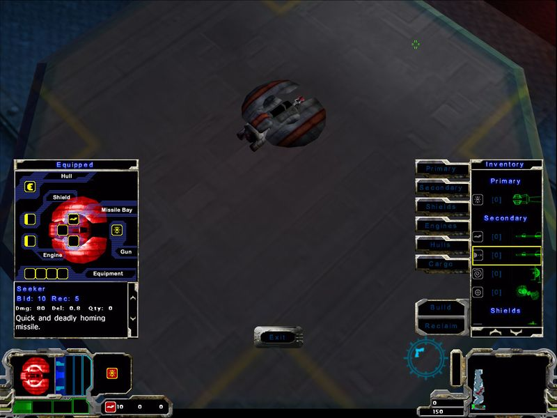

Смешение различных игровых жанров ныне достаточно частое явление, вспомните хотя бы Operation Flashpoint или Warcraft III. Вот и Dark Orbit, одно из последних творений WildTangent, является в некотором смысле гибридом: разработчики добавили в банальную изометрическую аркаду крошечную часть RPG. Нет, экспы и скиллов не появилось, разработчики добавили лишь аналог денег и инвентарь, однако даже это изменение сильно преобразило игру, сделав ее намного интереснее.

Местный супермаркет
Действие Dark Orbit происходит в пещерах Нибиру, десятой планеты Солнечной Системы. Неожиданно выяснилось, что эта, казалось бы, безжизненная и холодная планета населена жуткими мутантами, неожиданно напавшими на шахтеров. Игрок остается один на один с полчищами монстров, единственное его спасение в автоматической станции, где он может сделать из малидиума (местной руды) тот или иной агрегат для своего кораблика. Конечно, в shareware-версии список количество "комплектующих" невелико, но и оно может впечатлить. Залежи малидиума можно найти практически во всех уголках пещеры, а также он иногда выпадает из тел убитых мутантов.
В демо-версии доступен всего один уровень, если же вы пройдете процедуру платной регистрации, то откроется вся кампания. Даже этот единственный уровень способен вызвать уважение к творению WildTangent: для его прохождения необходимо в среднем около часа, что очень и очень немало для аркады. Уровень представляет собой огромную сеть пещер, в которой периодически попадаются поврежденные механизмы, а также телепорты, с помощью которых можно мгновенно перемещаться на базу.
Несомненно, Dark Orbit заслуживает особого внимания: WildTangent удалось создать самобытную вещь, в которую по-настоящему интересно играть. Пожалуй, единственным недостатком этой игры является то, что сохраняться можно исключительно между миссиями.